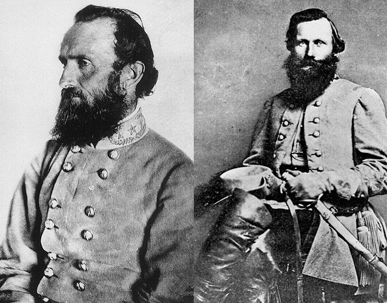
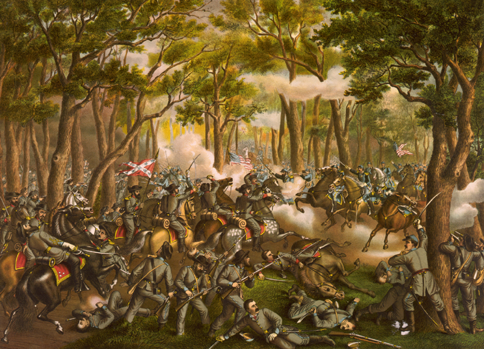
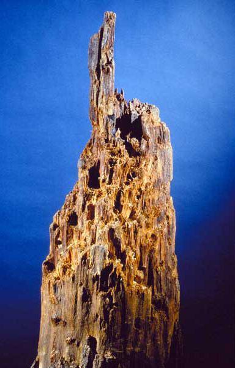
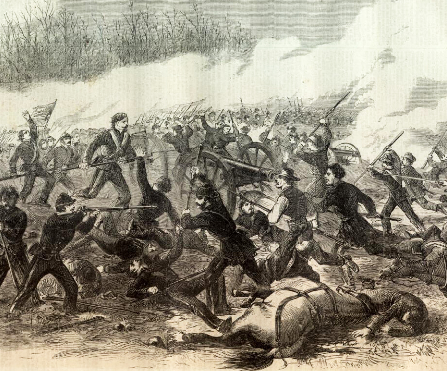

|
Civil War soldiers called it "seeing the elephant," a phrase
that evoked the greatest thrill of a boy's life growing up
in rural nineteenth-century America: seeing the elephant
when the circus came to town. For these boys who were
becoming men, the distantly anticipated experience of combat
was a big part of the thrill of enlisting in the Civil War
armies. By facing combat, they would prove their metric and
their manhood. During the early days of the war, when the
armies were assembling and soldiers were learning how to
pitch their tents and, if cavalrymen, how to mount their
horses, many young men feared that the war might end before
they got their chance to see the fighting. Once they had
experienced the shock of battle, the soldiers subsequently
expressed little eagerness for combat. Still, combat was the
common coin of war, and it would be the business of the
soldiers as long as the conflict lasted.
Performing in Battle
Few Civil War soldiers felt able simply to declare their
courage. No man knew how he would behave in battle, Ulysses
Grant's aide, Horace Porter, insisted, so courage was never
assured until it had been put to trial. Critical to the
soldier's Civil War was his willingness to expose himself in
a direct test of his mettle against that of the enemy.
The requirement that courage be a fearless courage meant
that the soldier's feelings about what he was doing were as
important as his actions. Particularly admired--sometimes
extravagantly were those who seemed to possess fearlessness
as nature's gift, those so oblivious to fear that it could
not exist within the range of their emotional reactions.
Such men showed an absolute indifference under fire; they
|

Stonewall Jackson (left) and J.E.B. Stuart were
famously indifferent to the danger posed by flying bullets. Both
were shot and killed during the Civil War.
|
were those ideal officers who were perfectly brave without
being aware that they were so. A Union artillery barrage
catching Confederates in the open sent them running for
cover--all but General Turner Ashby. He was, concluded an
observer as moved as the general was unmoved, "totally
indifferent to the hellish fire raining all about him."
Southern soldiers were convinced that both Stonewall Jackson
and J.E.B. Stuart ("he saw everything in battle utterly
undisturbed by the danger") lived with no consciousness of
the feeling of fear. When in battle, such men appeared to
expose themselves recklessly, with no idea that they stood
in danger of being killed. Long after others had abandoned
uncommon markings as a sure invitation to enemy bullets,
Stuart continued to wear in battle his distinctive slouch
hat adorned with a long plume. Be was widely admired for
what others took to be his constitutional insensibility to
risk. Similarly, Jackson's "utter disregard of danger" was
one of the strongest elements of magnetism drawing the
Southern rank-and-file to him.
To the relief--and sometimes the alarm--of those many
Soldiers who felt such sangfroid was not part of
their own natures, there was a wider path to courage. One
could--indeed, would have to--test oneself in combat and,
applying the powers of will, try to expel fear. Few could
hope to achieve the insouciance of a Stonewall Jackson or
the fearless courage of an Ashby or a Philip Kearny, but
soldiers could at least so diminish their secret fear that
they too would become capable of heroic action. Few felt
that they would be able to join the company of courage's
exemplars, but all knew it was essential to prove that they
were not cowards, and that was itself a formidable task.
Hence, few balked at submitting themselves to the test of
battle.
Reduced to tactical terms, courage was preeminently the
charge--the boldest actions were assumed to be those of
offensive warfare--but there were many other situations to
which the tenets of the test were no less applicable, trials
of steadfastness as well as advance. In the first years of
the war the rank-and-file held themselves to a strict
standard, that of fighting "man fashion." They were expected
to wait stoically through the tense and difficult period
just prior to battle; to stand and receive enemy fire
without replying to it (one of Lee's soldiers called this
"the most trying duty of the soldier"); and to resist all
urges to quicken their pace under fire, to dodge or duck
shells, or to seek cover. (Within those assumptions men who
at the war's outset had purchased body armor were ridiculed,
but the issue became moot when breastplates were discovered
to stop nothing except movement.)
Difficult as those tests were for enlisted men, the
burden on officers was far heavier. While each of those in
the ranks felt the necessity to prove himself to himself, to
those comrades around him and to his family, the officer was
compelled to do the same and, in addition, to impress his
courage, less by stoic endurance than by positive
demonstration, on all those he commanded. A Wisconsin
colonel was convinced that, "the men who carried the
knapsacks never failed to place an officer just where he
belonged, as to his intelligence and bravery. Even if
[officers] said nothing, yet their instinctive and
unconscious action in battle placed upon the officers the
unavoidable brand of approval or disapproval." Not even the
highest-ranking officers were exempt. "We knew the fighting
generals and we respected them," a New York artilleryman
said, "and we knew the cowards and despised them." Of 425
Confederate generals, seventy-seven were killed in the war.
For the officer, the arena was larger, the audience more
numerous, the possibilities of courageous demonstration more
varied, from the casual to the monumental. In his first
battle Robert Burdette, whose Illinois regiment was
bracketed by rifle and cannon fire, watched an officer ride
down the line, stop to ask a soldier for a match, light his
pipe, puff on it as he would relaxing before his hearth, and
then ride forward to overtake his skirmishers: "How I
admired his wonderful coolness!" A less "natural," more
hortatory--but no less admired--courage was that of Colonel
Emerson Opdycke, who, caught in the rout at Chickamauga, was
determined to hold ground vital to General George H.
Thomas's stand against the onrushing Confederates. He sat on
his horse at the crest of a hill and, though fully exposed

The legendary "rebel yell" served to reinforce the courage of Confederates
charging into battle, while undermining the courage of their opponents.
|
being engaged. One Union man commented: "The real test comes
to the enemy view, continued to point with his sword in the
direction his regiments were to fire. Such a pose might
today appear appropriate only to his posthumous equestrian
statue, but to those who watched, Opdycke was "the very
incarnation of soldierly bearing and manly courage."
That passages through the test should sometimes appear
effortless or theatrical should not hide its essential
characteristics. Its gravity was unquestioned. William Dame
was a young, well-educated Southern gentleman whose
artillery battery, the Richmond Howitzers, fought under Lee.
A teamster--"a dreadful, dirty, snuffy, spectacled old
Irishman," certainly no gentleman and not even a
soldier--one day insisted on taking the pulses of William
and his friends. He then announced the one soldier was
excited, another was frightened, that a third "would do all
right" in combat, and so on. Some of the judged were
pleased, others hated the Irishman for his verdicts, but no
one dared to refuse to submit to the test or to question its
results. "Nobody can tell what a dreadful trial this simple
thing was!"
The Nature of Battle
Battle was a comprehensive physical experience of the
senses that surrounded the soldier with a lethal, chaotic
environment. He had no control over that environment and
often had great difficulty controlling his emotional
response to it. Historian Eric J. Leed, in writing of World
War I, described the soldier's perception of himself as an
autonomous player in a world that could be manipulated. He
was used to living this role in civilian life but found that
in the trenches of the Western Front, those safe assumptions
were no longer valid. The result could be a breakdown of
something essential to morale.
The Civil War soldier never quite became entrapped in the
kind of physical environment of combat that the unlucky
veterans of World War I found themselves in, yet he and all
soldiers in combat faced the same problem: how to deal with
an environment over which he had little control. Chaos was
the theme most consistently used by Northern soldiers in the
descriptions of combat. On all levels--from the
smoke-enshrouded vision of the individual to the confused
movements of companies struggling through brush-entangled
terrain--the soldier struggled against chaos and strove to
create a coherent vision of battle.
Soldiers often found that combat wrecked the most
reassuring element of order in military life: the linear
tactical formations that were the foundation of movement on
the battlefield. "It is astonishing how soon, and by what
slight causes, regularity of formation and movement are lost
in actual battle," mused David L. Thompson of the 9th New
York. "Disintegration begins with the first shot. To the
book-soldier all order seems destroyed, months of drill
apparently going for nothing in a few minutes." Thompson
admitted that the presence of the enemy was the most
important factor in the breakdown of order in the ranks, but
it was also caused by vegetation and the terrain. A clump of
trees, for example, could cause one portion of a line to lag
behind the rest, skewing the whole or even resulting in the
line losing its direction and advancing to a point its
commanders had not intended.
As Thompson indicated, the chaos of battle was not caused
solely by the dangers of flying lead threatening frail
bodies; it was also the result of the natural arena on which
Civil War battles took place. The South occupied a vast
geographic area with a variety of terrain and natural
growth. Generally, about half the land on any given
battlefield was covered with vegetation, ranging from open
|

The Battle of the Wilderness was
profoundly affected by the vegetation that overran the
terrain.
|
woods to thickets of scrub trees choked with dense brush and
briars. Maps of several battlefields large and small-from
Wilson's Creek, Pea Ridge, and Prairie Grove in the
Trans-Mississippi; to Shiloh, Corinth, and Chickamauga in
the west; to Second Bull Run, the Wilderness, and Five Forks
in the east-show a mixture of open fields, choked thickets,
and grand forests. Long battle lines typically spanned this
mixture, part of them moving freely in the open and the rest
struggling through jungle matting. Infantry units clawed
their way through woods until they burst out into fields and
then wormed their way once again through thick growth. Civil
War field armies were so large that they could not fit onto
the small farms and pastures of the South but sprawled
across the landscape. Theodore Lyman, an aide on Major
General George Meade's staff, commented on the difficulties
of keeping the 5th Corps line straight during the early
phases of the Petersburg campaign. It "was not straight or
facing properly. That's a chronic trouble in lines in the
woods. Indeed there are several chronic troubles. The
divisions have lost connection; they cannot cover the ground
designated, their wing is in the air, their skirmish line
has lost its direction, etc., etc."
Vegetation had an enormous impact on Civil War tactics.
It broke up formations, nullified the power of shock on the
battlefield, and allowed firepower to dominate the action.
This greatly intensified the problem of controlling the
movements of individual regiments, brigades, and divisions.
Lateral coordination broke down, leaving units unsupported
on their flanks and commanders frustrated over the lack of
control they could exercise over their own men. Vegetation
severely limited visibility, thus reducing the range of
rifle fire. Soldiers often had to wait until the enemy was
seventy-five, forty, or even twenty yards away before
catching glimpses of gray-clad figures. Heavy growth often
nullified the effectiveness of artillery fire, for
projectiles that hit trees lost considerable velocity and
were deflected from their course. Most important, thick
vegetation hid targets, and Civil War artillerymen could
fire only at what they saw. It also made the cavalry even
more irrelevant on the battlefield than it had already
become due to the rifle musket. On open ground, cavalry was
decimated by rifle fire when it attempted to launch mounted
assaults against infantry; in brush-entangled terrain,
cavalrymen had no chance to employ shock tactics against
infantry.
Trees, bushes, and grasses of all kinds were such
ever-present elements on the battlefield that they became
unintended targets. Civil War battle had an enormous,
awe-inspiring effect on vegetation, ripping the natural
growth like a great reaping machine. Soldiers were nearly as
astonished by this as by the destruction of human bodies.
Lieutenant Colonel Alexander W. Raffen of the 19th Illinois
looked with amazement at the field of Chickamauga several
months after the battle. "The trees in some places are cut
down so much by the artillery that it looks as if a tornado
had swept over the field, all the trees and stumps are
plugged all over with bullets; it is astonishing to think
that any one could have come off safe without being hit."
Such destruction led an Indiana soldier to remark of Shiloh,
"Thare is some places that it Looks as if a mouse could not
get threw alive."
Captain John William DeForest of the 12th Connecticut, an
educated and highly literate observer of the military
experience, was very sensitive to the sublimity of this part
of battle. Industrialized warfare shattered the natural
environment of the battlefield, representing in DeForest's
mind the growing power of man over the wilderness. It was a
power that he felt must be viewed with ambivalence.
Observing the effect of Confederate artillery fire during a
Federal assault on the defenses of Port Hudson, DeForest
noted that "every minute or two some lordly tree, eighteen
inches or two feet in diameter, flew asunder with a roar and
toppled crashing to earth. For some minutes I admired
without enjoying this sublime massacre of the monarchs of
the forest."
Few soldiers could actually enjoy seeing nature
destroyed, partly because it meant that the stable placement
of natural objects around them was also destroyed. Their
sense of disorder and the inability to control their
immediate environment was heightened when they saw great
trees shorn and splintered. It was physical proof that
nothing, not even the "monarchs of the forest," could
withstand combat unscathed. And it was not only the trees
that suffered; astonishingly, even bushes, underbrush, and
blades of grass were clipped as if by shears and scissors in
the storm of rifle fire that swept the battlefield.
The most famous instance of nature suffering at the hands
of soldiers engaged in combat occurred at Spotsylvania on
May 12, 1864. In one of the most horrific battles of the
war, massed Union and Confederate formations poured Fire at
each other all day long while locked into static positions
on opposite sides of an earthen parapet. Late that night, an
oak tree some twenty inches in diameter fell; its trunk had
been so pared by the rain of rifle balls that it could no
longer stand. In its fall, the oak knocked a South Carolina
soldier unconscious and grazed several other men. For the
soldiers, this tree came to symbolize the awesome
|

The "Spotsylvania Stump," as it is now known
|
destructive power of combat. The trunk was quickly cut up by
Federals eager for a relic of the great battle, and the
stump was removed to find its way many years later into the
Smithsonian Institution's National Museum of American
History.
It seemed rather odd to Northern soldiers that trees,
bushes, and grass could become casualties of war. That is
why so many of them commented on this aspect of combat.
Indeed, considering the small size of field armies and the
usually short duration of engagements in America's previous
wars, the Civil War was the only conflict fought on American
soil in which the natural environment was decimated by
artillery and small-arms fire. The destruction of natural
growth was yet another example of the bizarre chaos
generated by battle. Nothing was safe from the lethal fire
unleashed by massed formations of determined men.
Virtually no man was safe from that lethal fire either.
One of the great untold stories of the Civil War was the
tragic deaths of Union soldiers from what twentieth-century
writers would call "friendly fire." The Union army made no
attempt to determine how many of its members became victims
at its own hand. Much of it was the result of poor artillery
fire and faulty equipment. The ever-observant Theodore Lyman
of Meade's staff noted the frequency of this occurrence:
"Not a battle is fought that some of our men are not killed
by shells exploding short and hitting our troops instead of
the enemy's, beyond. Sometimes it is the fuse that is
imperfect, sometimes the artillerists lose their heads and
make wrong estimates of distance."
The majority of friendly casualties, however, resulted
from small-arms fire. "A lot of Maine Conscripts fired into
us the other day wounding several of the boys," complained
William Ketcham of the 13th Indiana. Nervousness and lack of
training led to the unintended deaths of thousands. Musing
on the death of a "wicked profane boy" who nevertheless was
a "good soldier" (he was struck in the back of the head by a
Federal ball while standing picket duty), Thomas White
Stephens of the 20th Indiana complained, "It is a shame that
men can not keep cool in time of battle, but fire into one
another." The religious Stephens took this philosophically,
but many others were greatly embittered by such an
unexpected loss of their comrades.
None of the green volunteers who flocked to the
recruiting stations in 1861 could have guessed that battle
would consume men in this fashion. As they came to know it,
some of the glory went out of the sacrifice, and the
soldier's awareness of the chaotic nature of battle
increased. He had to be concerned not only with fire to the
front but also with the potential of fire to the rear.
Beyond the disorder caused by tangled terrain and
friendly fire, the ultimate chaos of combat occurred when
soldiers engaged in hand-to-hand fighting. When soldiers
were exchanging blows with clubbed muskets or lunging at
each other with bayonets and swords, all order broke down.
Officers found it impossible to direct or control their men,
and soldiers found themselves surrounded on all sides by an
enemy who was close enough to knock them down with their
fists. Hand-to-hand combat created an environment of brute
survival unequaled by any other form of battle.
Lieutenant Holman Melcher, commanding Company F, 20th
Maine, took part in a classic example of personal combat
during the battle of the Wilderness. His company had
advanced too far into the thick scrub timber and had become
separated from its regiment. He and seventeen men were
forced to retreat through Confederate lines. They crept
through the brush to within fifteen paces of the Rebels,
then fired and rushed into the scattered Confederate line.
Although most of the Confederates fled rather than engage
his men, some accepted the challenge. After seeing one man
pin a Rebel to the ground with a bayonet, Melcher swung his
sword at the back of another Confederate who was about to
|

An 1862 engraving from Harper's Weekly
illustrates the disorder and confusion of hand-to-hand combat.
|
fire his musket, but he was barely close enough to do any
damage. "The point cut the scalp on the back of his head and
split his coat all the way down the back. The blow hurt and
startled him so much that he dropped his musket without
firing, and surrendered." Melcher's little band made it
safely back to the Union lines.
Melcher discovered what most soldiers knew: hand-to-hand
combat was so confusing, so threatening, and so
unpredictable that men seldom allowed themselves to be
caught in it. An unusually reflective civilian, Sidney
George Fisher, came to the same conclusion, and his thoughts
were confirmed by a long conversation he had with a veteran
of McClellan's Peninsula campaign. "I said it seemed to me
that the most terrible thing in a battle must be a charge of
bayonets, that a confused melee of furious men armed with
such weapons, stabbing each other & fighting hand to hand in
a mass of hundreds, was something shocking even to think of.
He said it was so shocking that it very rarely happened that
bayonets are crossed, one side or the other almost always
giving way before meeting."
Fisher was unique, for few civilians realized that battle
seldom involved close-range fighting. It was the most
personalized form of warfare, and soldiers avoided it. To
kill the enemy at a distance was safer and easier.
Depersonalized combat represented the true nature of modern
warfare, making the killing easier to do and to endure. "We
hear a great deal about hand-to-hand fighting," complained
Henry Otis Dwight of the 20th Ohio during the Atlanta
campaign. "Gallant though it would be, and extremely
pleasant to the sensation newspapers to have it to record,
yet, unfortunately for gatherers of items, it is of very
rare occurrence ... When men can kill one another at six
hundred yards they generally would prefer to do it at that
distance than to come down to two paces."
Source: Steven C. Woodworth, ed., The Loyal, True, and Brave
(Wilmington, DE: Scholarly Resources, Inc., 2002), 22-54.
|